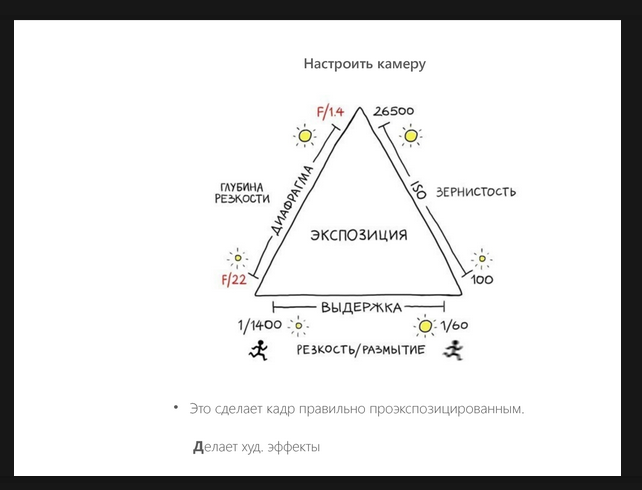
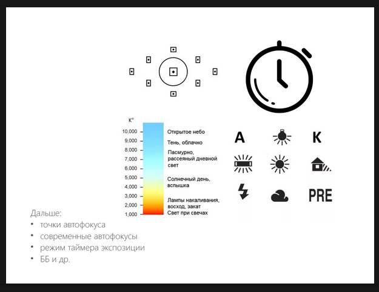

Динамический диапазон - охват от самого яркого до самого темного (обычно больше кадр - больше ДД)
Больше открыта диафрагма - более размытый фон
С импульсным светом надо закрывать диафрагму
Выдержка длиннее чем 1/125 обычно не ставится (правило не для длинного объектива)


Фокусировка:
сфокусировать объект в центре, зажать спуск на 1/2, двигать камеру как надо
Свет
всегда поворачиваем нос на свет
оба глаза должны быть подсвечены
Композиция
Ритм - упорядоченное повторение объектов
Линейная перспектива - 2 плоскости концентрируют внимание на пересечении
Цвета:
теплое близко, холодное далеко
Если есть элемент, который можно безболезненно убрать - композиция плохая
Конвертация из RAW
Обработка должна быть быстрой
Кожа не должна быть замыленной
Психология работы с моделью
Заранее разговариваем, включаем музыку, хвалим, говорим о человеке